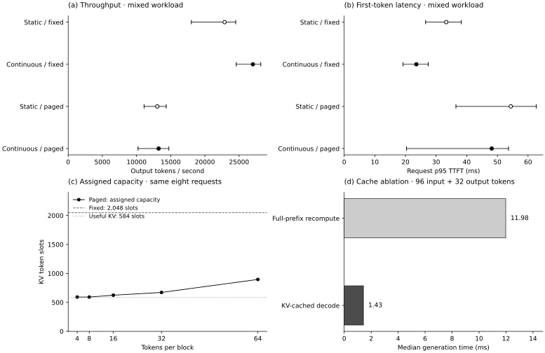
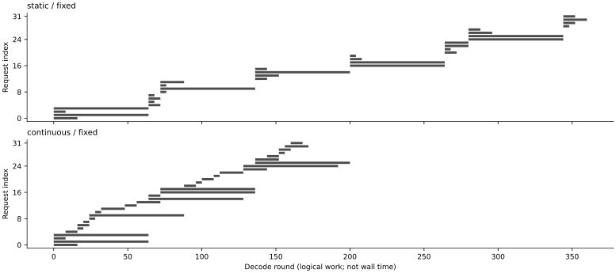

When should a free slot be reused?
Continuous scheduling admits a new request when an earlier one finishes, while static waves wait for their longest member. Equal-length and long-tail workloads make the difference visible.
A small, inspectable inference engine for studying how KV caching, block allocation and request scheduling interact under a fixed capacity budget.
Efficient serving requires more than generating tokens. Requests have unequal lifetimes, KV state grows during decoding, and optimizations can move a bottleneck rather than remove it. KVServe makes those interactions explicit with separate model, cache, scheduler and delivery layers.
A controlled 2 × 2 experiment compares static and continuous scheduling with fixed and paged cache layouts. The reference uses an untrained, 49,408-parameter attention decoder so its mechanics remain auditable without model downloads. It measures serving behavior, not language quality.
Continuous scheduling admits a new request when an earlier one finishes, while static waves wait for their longest member. Equal-length and long-tail workloads make the difference visible.
Fixed context slabs waste assigned capacity on short requests. Page tables allow incremental ownership, with block size determining the unused tail.
Not necessarily. Direct blockwise attention avoids a full-history gather, but Python traversal can cost more than the concurrency it enables. The evaluation retains that negative result.
Policies use the same model, workloads and output budgets. Every measured run checks output equivalence and cache release; real events supply the latency measurements.
| Experiment | Result | What the result means |
|---|---|---|
| Cached vs full-prefix execution | 8.39× faster | 11.98 → 1.43 ms median; a separate 96-input / 32-output CPU compute experiment. |
| Continuous vs static scheduling | 18.1% higher throughput | 22,883 → 27,022 output tokens/s on the mixed-length workload with fixed caches. |
| First-token latency | 29.3% lower p95 TTFT | Same fixed-cache comparison; median of per-run p95s at in-process emission. |
| Paging vs fixed slabs | 69.5% less assigned capacity | 2,048 → 624 KV slots for eight matched lengths. Not a process-RAM reduction. |
| Evaluation | 180 runs / 5,760 completions | Three workload families, three workload seeds, four configurations and five repeats. |

Paging improves assigned capacity but lowers throughput in this Python reference. These numbers are not a comparison against vLLM, a trained LLM, or a GPU kernel. The full result matrix and all raw runs are available in the repository.

Prefill predicts the first output. Only emitted tokens needed for another prediction are fed back. Completion, cancellation and failure release both physical ownership and promised capacity.
Before admission, reserve enough KV capacity for the declared output budget. Allocate pages as history grows. Requests that cannot fit an empty pool fail validation.
Online softmax combines each block's logits into one stable attention result. No complete KV-history gather is required. Equivalence tests compare it against contiguous attention.
Concurrent HTTP clients share one scheduler. Bounded channels carry token events; disconnects cancel work. The benchmark stamps events at their origin rather than reconstructing timestamps.
python -m venv .venv
source .venv/bin/activate
python -m pip install -e '.[server,dev]'
OPENBLAS_NUM_THREADS=1 OMP_NUM_THREADS=1 MKL_NUM_THREADS=1 \
python -m benchmarks.run --output .runs/reproduced
python scripts/report.py --results .runs/reproduced --assets .runs/figures
python -m unittest discover -s tests -vRun commands from a checkout of the repository. The recorded manifest identifies the CPU, runtime versions, thread settings and source hashes. Timings vary across machines; output IDs, ownership checks and capacity accounting provide portable correctness targets.